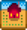

Начало
| Начало | Игрок | Настройки | Управление | Управление (мобильная версия) |
Здоровье | Энергия | Навыки | Суточный цикл |
Игра Stardew Valley не ограничена временем, что позволяет игроку достичь своей цели нелинейно.
Существуют различные способы получения дохода и множество видов деятельности на выбор, включая: фермерство, рыбную ловлю, собирательство, горное дело, борьбу с врагами, изготовление предметов, приготовление пищи, возможность дарить подарки, выполнять задания и восстановить городской клуб.
Создание персонажа
- Основная страница: Игрок
Окно создания персонажа дает различные варианты настройки: внешний вид персонажа, его пол, имя, название фермы, любимая вещь и предпочтительное животное.
- На выбор есть 2 пола, 24 тона кожи, 32 причёски, 112 видов рубашек и 20 аксессуаров.
- Ползунки рядом с цветом глаз, волос и брюк представляют собой их оттенок, насыщенность и яркость.
- Предпочтительное животное определяет, какое домашнее животное вам предложат завести.
- Пол не влияет на брак в игре, вступить в брак можно с жителем любого пола.
- Любимая вещь будет упоминаться в игре, когда игрок съедает звездную каплю. Если выбрать ConcernedApe своей любимой вещью, то когда вы съедите звездную каплю, появится следующее сообщение:
Игроки могут впоследствии изменить свой внешний вид за  500 з. в башне волшебника после достижения 4 сердечек дружбы с ним или получив доступ к Хижине ведьмы и используя соединяющий их портал.
500 з. в башне волшебника после достижения 4 сердечек дружбы с ним или получив доступ к Хижине ведьмы и используя соединяющий их портал.
В меню создания персонажа есть кнопка со значком гаечного ключа  , которая содержит меню Расширенных настроек.
, которая содержит меню Расширенных настроек.
Карты ферм
- Основная страница: Карты ферм
Игрок может выбрать одну из пяти карт ферм. Каждая ферма предлагает уникальные преимущества и способствует развитию определённого навыка. После выбора карты её нельзя изменить, созданный персонаж привязан к своему типу карты. Все карты одинаковой площади, но на каждой из них имеется разное количество поддающихся обработке под фермерство и пригодных для застройки земель.
| Тип | Описание | Предпочтительный навык | |
|---|---|---|---|
|  | Стандартная ферма | Оригинальная карта фермы. Максимально большое пространство под посевы и животных. | |
| Ферма на реке | Ваш участок разделён на несколько островков и пару берегов. Свободное пространство для выращивания культур и животных ограниченно. Рыба здесь клюёт куда чаще, чем обычно. Игроки могут поймать ту же самую рыбу, которая доступна в городе. | ||
| Лесная ферма | Лес занимает большую часть земли, ограничивая пространство, доступное для фермерства. На восточном краю карты есть возобновляемые пни деревьев, а также сезонные предметы для собирания. На этой ферме появляется уникальный сорняк, из которого всегда выпадают смешанные семена. | ||
| Горная ферма | Каменистая почва и изгибы реки ограничивают ваши возможности. С другой стороны, на юго-западе есть залежи минералов, а также уникальные месторождения жеод. | ||
| Ферма в глуши | Здесь полно хорошей земли, но берегитесь — по ночам здесь появляются чудовища. На этой карте появляются уникальные Големы из глуши. Их показатели зависят от уровня боевых навыков игрока. | ||
| Ферма «Четыре угла» | Земля разделена на 4 части, каждая со своими особенностями. Прекрасно подходит для компании! | ||
| Пляжная ферма | Хорошо подходит для собирательства и рыбалки, а еще тут много места. Иногда на берег выносит ящики. Один минус: спринклеры не работают на песке. Подходит для игроков, которые не сильно полагаются на фермерство. | ||
| Луговая ферма | Смешанная карта, на которой есть река и два небольших озера. В начале игры есть птичник с двумя курицами. На карте растет свежая голубая трава, которая годится на корм животным. Хорошо подходит для животноводства. | ||
Управление
- Основная страница: Управление
Кнопки управления можно переназначить во вкладке «Настройки» в игровом меню. 
| Кнопка | Функция |
| W A S D |
Кнопки отвечают за перемещение персонажа W вверх, A влево, S вниз, D вправо |
| ЛКМ, C | Использовать инструмент, предмет |
| ПКМ, X | Проверить или выполнить действие |
| Esc, E | Открыть Меню |
| F | Открыть дневник |
| M | Открыть карту |
| Левый Shift | Бег (Автобег включен по умолчанию, изменяется в меню) |
| 1 - 0, - , + | Горячие клавиши слотов панели инструментов. Также выбираются с помощью колёсика мыши для быстрой прокрутки |
| F4 | Режим снятия скриншотов |
| Выбор курсором | Нажмите на любой слот панели инструментов с помощью мыши для его выбора. Даже на пустые, что нельзя сделать с помощью колеса мыши или горячих клавиш |
Подготовка вашего первого урожая
- Используйте ваш топор, кирку и косу на деревьях, бревнах, камнях, траве и кустарниках на вашей ферме, чтобы очистить 15 клеток.
- Используйте свою мотыгу, чтобы вспахать почву и посадить 15 семян пастернака, предоставленных мэром Льюисом.
- Используйте вашу лейку, чтобы полить семена и почву.
- Продолжайте поливать свои культуры каждый день, пока из них не вырастет урожай. Ваш пастернак вырастет и будет готов к сбору через 4 дня.
Лейка
- Основная страница: Лейка
Культуры необходимо ежедневно поливать, чтобы они росли. Обычная лейка поливает только одну клетку за раз, её можно наполнить из любого водоема на вашей ферме.
Ваши культуры могут пережить один день без полива. Это означает, что вы можете поливать их раз в 2 дня, если хотите, но это приведёт к замедлению их роста.
Идеально улучшать свою лейку за день до дождливого дня, предварительно полив растения. На следующий день поливкой займётся дождь, а на последующий лейку уже можно будет забрать. Также вы можете улучшить лейку в последние пару дней сезона, когда у вас уже нет посадок и не требуется ничего поливать.
Кузнецу потребуется 2 дня для обновления любых инструментов, включая лейку.
Другим способом полива является использование спринклеров. Они будут автоматически поливать окружающие грядки ежедневно. Есть 3 типа спринклеров, которые могут поливать окружающие клетки, начиная с 4 клеток (по одной рядом со спринклером сверху, справа, снизу и слева), 8 клеток (окружающая площадь 3x3) и 24 клеток (окружающая площадь 5x5).
Энергия
- Основная страница: Энергия
Энергия ограничивает вашу производительность. Один из главных способов пополнить энергию - есть еду. Для поедания пищи щелкните правой кнопкой мыши (если пища у вас в руках) или выберите номер ячейки на панели быстрого доступа, содержащей пищу, а затем щелкните правой кнопкой мыши. Большинство видов культур и многие виды продовольственных товаров можно есть, чтобы восстановить энергию. Некоторые продукты отнимают энергию. Наведите курсор на продукт или блюдо, чтобы увидеть, сколько энергии он добавляет или отнимает.
Сон в конце дня восстановит энергию игрока. Если лечь спать после полуночи (00:00) игрок не восстановит 100% энергии. Если игрок исчерпает все силы или не успеет лечь спать до 2 часов ночи, то утром уровень его энергии восстановится примерно наполовину.
На третий день лета землетрясение разрушит камни, которые блокируют путь к бане (к северу от столярной мастерской). Баня полностью восстанавливает энергию в течение короткого периода времени.
В режиме совместной игры лежание на кровати будет восстанавливать энергию постепенно.
Навыки
- Основная страница: Навыки
Выполняя определенные действия, игрок повышает уровень навыка, связанного с этим умением. Например, выращивая урожай и занимаясь сельским хозяйством, вы будете повышать навык фермерства. Прокачать навык cобирательства можно, как собирая дикорастущие растения, так и вырубая деревья топором. Навык горного дела улучшается разбиванием камней киркой. Навык рыбная ловля улучшается, когда ваш персонаж успешно завершает мини-игру во время рыбалки, то есть с каждой пойманной рыбой. Так же навык рыбной ловли увеличивается с использованием крабовых ловушек. По мере увеличения уровня навыка игрок будет получать рецепты для изготовления предметов или готовки (каждый уровень, за исключением уровней 5 и 10) или профессии (на уровнях 5 и 10).
Профессии (уровни 5 и 10) могут давать игроку различные бонусы при получении и продаже ресурсов. Выбор профессии на 5 уровне определяет, какие варианты профессий будут доступны на 10 уровне.
Односельчане и дружба
- Основная страница: Жители деревни и Дружба с ними
- Смотрите также: Брак и Список всех подарков.
Вручение подарков односельчанам увеличит их дружбу с вами. Вы можете вручить подарок, выделив его в своем инвентаре или выбрав его, набрав его номер горячей клавиши, а затем щелкнув левой кнопкой мыши на персонажа, которому вы хотите передать этот предмет. По мере зарабатывания очков дружбы жители города будут отправлять вам кулинарные рецепты или предметы по почте, а также дадут доступ к своим спальням, а их отношение к вам в общении изменится. Также при получении сердечек дружбы могут появляться уникальные сцены и взаимодействия. Игрок должен заработать высокий уровень дружбы, чтобы встречаться и в конечном счёте жениться.
Телевидение
- Основная страница: Телевидение
По телевизору можно узнать полезную информацию, включая прогноз погоды, ежедневные предсказания, бесплатные кулинарные рецепты, а также полезные советы. Телевизор игрок получает в начале игры.